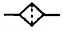
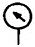
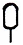

지게차유사(롤러,기중기등) (2015-10-10 기출문제)
1. 동절기 냉각수가 빙결되어 기관이 동파되는 원인은?
- 열을 빼앗아가기 때문
- 냉각수가 빙결되면 발전이 어렵기 때문
- 엔진의 쇠붙이가 얼기 때문
- 냉각수의 체적이 늘어나기 때문
(정답률: 70%)

2. 디젤기관의 피스톤 링이 마멸되었을 때 발생되는 현상은?
- 엔진 오일의 소모가 증대된다.
- 폭발 압력의 증가 원인이 된다.
- 피스톤의 평균 속도가 상승한다.
- 압축비가 높아진다.
(정답률: 85%)
3. 다음 중 일반적으로 기관에 많이 사용되는 윤활 방법은?
- 수 급유식
- 적하 급유식
- 비산 압송 급유식
- 분무·급유식
(정답률: 73%)
4. 디젤기관의 점화(착화) 방법으로 옳은 것은?
- 전기점화
- 자기착화
- 마그넷점화
- 전기착화
(정답률: 67%)
5. 엔진의 밸브 장치 중 밸브 가이드 내부를 상하 왕복운동 하며 밸브 헤드가 받는 열을 가이드를 통해 방출하고, 밸브의 개폐를 돕는 부품의 명칭은?
- 밸브 시트
- 밸브 스템
- 밸브 페이스
- 밸브 스템 엔드
(정답률: 48%)
6. 가솔린기관과 비교하여 디젤기관의 일반적인 특징으로 가장 거리가 먼 것은?
- 소음이 크다.
- 회전수가 높다.
- 마력 당 무게가 무겁다.
- 진동이 크다.
(정답률: 64%)
7. 압력식 라디에이터 캡의 사용에 주된 목적은?
- 엔진의 빙결을 방지한다.
- 냉각효과를 높인다.
- 냉각수의 비점을 높인다.
- 냉각수의 누수를 방지한다.
(정답률: 61%)
8. 디젤기관에서 냉각수의 온도에 따라 냉각수 통로를 개폐하는 수온 조절기가 설치되는 곳으로 적당한 곳은?
- 라디에이터 상부
- 라디에이터 하부
- 실린더 블록 물 재킷 입구부
- 실린더 헤드 물 재킷 출구부
(정답률: 57%)
9. 디젤엔진에 사용되는 과급기가 하는 역할로 가장 적합한 것은?
- 출력의 증대
- 윤활성의 증대
- 냉각효율의 증대
- 배기의 정화
(정답률: 83%)
10. 디젤 연료장치에서 공기를 뺄 수 있는 부분이 아닌 것은?
- 노즐 상단의 피팅 부분
- 분사펌프의 에어브리드 스크루
- 연료 여과기의 벤트 플러그
- 연료 탱크의 드레인 플러그
(정답률: 52%)
11. 작업 중 엔진온도가 급상승 하였을 때 가장 먼저 점검하여야 할 것은?
- 윤활유 점도지
- 크랭크축 베어링 상태
- 부동액 점도
- 냉각수의 양
(정답률: 90%)
12. 기관에서 크랭크축의 역할은?
- 원활한 직선운동을 하는 장치이다.
- 기관의 진동을 줄이는 장치이다.
- 직선운동을 회전운동으로 변환시키는 장치이다.
- 상하운동을 좌우운동으로 변환시키는 장치이다.
(정답률: 82%)
13. 축전지의 구조와 기능에 관련하여 중요하지 않은 것은?
- 축전지 제조회사
- 단자기둥의 ＋, - 구분
- 축전지의 용량
- 축전지 단자의 접촉상태
(정답률: 88%)
14. 기관 시동 시 전류의 흐름으로 옳은 것은?
- 축전지 → 전기자 코일 → 정류자 → 브러시 → 계자 코일
- 축전지 → 계자 코일 → 브러시 → 정류자 → 전기자 코일
- 축전지 → 전기자 코일 → 브러시 → 정류자 → 계자 코일
- 죽전지 → 계자 코일 → 정류자 → 브러시 → 전기자 코일
(정답률: 40%)
15. 충전장치에서 교류발전기는 무엇을 변화시켜 충전 출력을 조정하는가?
- 회전속도
- 로터코일 전류
- 브러시 위치
- 스테이터 전류
(정답률: 45%)
16. 교류 발전기의 구성품으로 교류를 직류로 변환하는 구성품은?
- 스테이터
- 로터
- 정류기
- 콘덴서
(정답률: 55%)
17. 예열 장치의 고장 원인이 아닌 것은?
- 가열시간이 너무 길면 자체 발열에 의해 단선된다.
- 접지가 불량하면 전류의 흐름이 적어 발열이 충분하지 못하다.
- 규정 이상의 전류가 흐르면 단선되는 고장의 원인이 된다.
- 예열 릴레이가 회로를 차단하면 예열플러그가 단선된다.
(정답률: 66%)
18. 차량에 사용되는 계기의 장점으로 틀린 것은?
- 구조가 복잡할 것
- 소형이고 경량일 것
- 지침을 읽기가 쉬울 것
- 가격이 쌀 것
(정답률: 87%)
19. 수동변속기에서 록킹 볼이 마멸되면 어떻게 되는가?
- 기어가 빠지기 쉽다.
- 변속할 때 소리가 난다.
- 기어가 이중으로 물린다.
- 변속 기어의 백래시 유격이 크게 된다.
(정답률: 68%)
20. 롤러의 운전조작으로 옳지 않는 것은?
- 주차할 때 반드시 주차브레이크를 작동시킨다.
- 다짐작업은 대각선 방향으로 한다.
- 클러치 조작은 반클러치를 사용하지 않도록 한다.
- 전, 후진시의 변속은 정지시킨 다음에 한다.
(정답률: 76%)
21. 상차 작업장에서 사고를 방지하기 위한 안전 대책으로 틀린 것은?
- 해당 운전자만 운전하도록 한다.
- 운전자와 신호수의 신호에 의해서만 작업을 진 행 한다.
- 운전이나 정비 중에 관계자 외 접근을 금한다.
- 작업장 시설에 대한 검토는 작업이 종료된 직후 실시한다.
(정답률: 85%)
22. 무한궤도식 건설기계에서 유압식 트랙의 장력 조정은 어느 것으로 하는가?
- 상부 롤러의 이동으로
- 하부 롤러의 이동으로
- 스프로킷의 이동으로
- 아이들러의 이동으로
(정답률: 62%)
23. 수동변속기에서 클러치의 구성품에 해당되지 않는 것은?
- 릴리스 레버
- 클러치 디스크
- 로커 암
- 릴리스 베어링
(정답률: 69%)
24. 건설기계를 사용하지 않고 장기간 격납시켜 둘 때 주의사항으로 틀린 것은?
- 배터리를 떼서 완전 충전시킨 후 별도 보관한다.
- 기관 크랭크실, 변속기 등의 윤활유를 완전히 빼 둔다.
- 부동액이 아닌 경우 겨울철에는 냉각수를 빼 둔다.
- 장비에 커버를 하여 두는 것이 좋다.
(정답률: 75%)
25. 콘크리트피니셔의 바이브레이터(vibrator) 장치에서 점검할 부분이 아닌 것은?
- 벨트
- 십자축
- 기어박스
- 스프레드 스크류
(정답률: 45%)
26. 터빈, 스테이터, 임펠러의 구조로 이루어진 장치는?
- 액슬축
- 인터쿨러
- 토크컨버터
- 파이널 드라이브
(정답률: 67%)
27. 트랙을 구성하는 부품이 아닌 것은?
- 핀
- 부싱
- 로드
- 링크
(정답률: 41%)
28. 아스팔트피니셔의 구성품 중 노면에 살포된 혼합재를 매끈하게 다듬질하는 판은?
- 리시빙 호퍼
- 스크리드
- 스프레딩 스크루
- 댐퍼
(정답률: 32%)
29. 건설기계 타이어 패턴 중 슈퍼 트랙션 패턴의 특징으로 틀린 것은?
- 패턴의 폭은 넓고 홈을 낮게 한 것이다.
- 진행 방향에 대한 방향성을 가진다.
- 기어 형태로 연약한 흙을 잡으면서 주행한다.
- 패턴 사이에 흙이 끼는 것을 방지한다.
(정답률: 43%)
30. 표면 지층에서 20cm가 넘는 연약한 지반에 사용되며 흙의 표면을 분쇄하여 다질 수 있고, 그물모양의 바퀴를 사용하는 롤러 형식은?
- 시프 풋식(sheep foot type)
- 턴 풋식(turn foot type)
- 타이 어식(tire type)
- 진동식(vibratory type)
(정답률: 40%)
31. 건설기계의 구조변경검사신청서에 첨부할 서류가 아닌 것은?
- 변경 전·후의 건설기계의 외관도(외관의 변경이 있는 경우에 한한다.)
- 변경 전·후의 주요제원 대비표
- 변경한 부분의 도면
- 변경한 부분의 사진
(정답률: 58%)
32. 건설기계소유자의 정비작업 범위를 위반하여 건설기계를 정비한 자에 대한 벌칙은?
- 200만원 이하의 벌금
- 100만원 이하의 벌금
- 100만원 이하의 과태료
- 50만원 이하의 과태료
(정답률: 28%)
33. 고의로 경상 2명의 인명피해를 입힌 건설기계를 조종한 자에 대한 면허의 취소·정지처분 내용으로 맞는 것은?
- 취소
- 면허효력 정지 60일
- 면허효력 정지 30일
- 면허효력 정지 20일
(정답률: 77%)
34. 시·도지사가 등록된 건설기계를 그 소유자의 신청이나 시·도지사의 직권으로 등록을 말소할 수 있는 경우가 아닌 것은?
- 건설기계를 도난당한 경우
- 건설기계를 수입하는 경우
- 건설기계의 차대가 등록 시의 차대와 다른 경우
- 건설기계가 천재지변 또는 이에 준하는 사고 등으로 사용할 수 없게 되거나 멸실된 경우
(정답률: 58%)
35. 등록건설기계의 기종별 기호표시 방법으로 옳은 것은?
- 02 : 굴삭기
- 03 : 덤프트럭
- 01 : 지게차
- 04 : 불도저
(정답률: 63%)
36. 정기검사" 유효기간이 만료된 건설기계는 유효기간이 끝난 날로부터 몇 월 이내에 건설기계 소유자에게 최고하여야 하는가?
- 1개월
- 2개월
- 3개월
- 4개월
(정답률: 38%)
37. 건설기계관리법상 구조변경 범위 대상으로 틀린 것은?
- 건설기계의 기종변경
- 원동기의 형식변경
- 주행장치의 형식변경
- 조종장치의 형식변경
(정답률: 66%)
38. 건설기계정비업의 등록구분이 아닌 것은?
- 부분건설기계정비업
- 특수건설기계정비업
- 전문건설기계정비업
- 종합건설기계정비업
(정답률: 50%)
39. 건설기계대여업의 등록을 하려는 자는 국토교통부령이 정하는 서류를 첨부하여 건설기계대여업등록신청서를 어디에 제출해야 하는가?
- 국토교통부장관
- 산업통상자원부장관
- 시장·군수 또는 구청장
- 도지사
(정답률: 60%)
40. 대형 건설기계에 적용해야 될 내용으로 맞지 않는 것은?
- 당해 건설기계의 식별이 쉽도록 전후 범퍼에 특별도색을 하여야 한다.
- 최고속도가 35km/h 이상인 경우에는 부착하지 않아도 된다.
- 운전석 내부의 보기 쉬운 곳에 경고 표지판을 부착하여야 한다.
- 총중량 30톤, 축중 10톤 미만인 건설기계는 특별표지판 부착대상이 아니다.
(정답률: 63%)
41. 유압 실린더 지지방식 중 트러니언형 지지 방식이 아닌 것은?
- 캡측 플랜지 지지형
- 헤드측 지지형
- 캡측 지지형
- 센터 지지형
(정답률: 43%)
42. 펌프에서 진동과 소음이 발생하고 양정과 효율 이 급격히 저하되며, 날개차 등에 부식을 일으키는 등 펌프의 수명을 단축시키는 것은?
- 펌프의 비속도
- 펌프의 공동 현상
- 펌프의 채터링 현상
- 펌프의 서징 현상
(정답률: 39%)
43. 유압장치에서 배압을 유지하는 밸브는?
- 릴리프 밸브·
- 카운터 밸런스 밸브
- 유량제어 밸브
- 방향제어 밸브
(정답률: 50%)
44. 유압 실린더에서 피스톤 행정이 끝날 때 발생하는 충격을 흡수하기 위해 설치하는 장치는?
- 쿠션 기구
- 압력보상 장치
- 서보 밸브
- 스로틀 밸브
(정답률: 72%)
45. 유압오일의 온도가 상승할 때 나타날 수 있는 결과가 아닌 것은?
- 오일 누설 발생
- 펌프 효율 저하
- 점도 상승
- 유압밸브의 기능 저하
(정답률: 68%)
46. 유압탱크의 주요 구성요소가 아닌 것은?
- 유면계
- 주유구
- 유압계
- 격판(배플)
(정답률: 37%)
47. 압력을 표현한 식으로 옳은 것은?
- 압력 = 힘 ÷ 면적
- 압력 = 면적 × 힘
- 압력 = 면적 ÷ 힘
- 압력 = 힘 - 면적
(정답률: 51%)
48. 유압 도면기호에서 여과기의 기호 표시는?



(정답률: 59%)
49. 유압장치의 수명연장을 위해 가장 중요한 요소는?
- 오일탱크의 세척
- 오일냉각기의 점검 및 세척
- 오일펌프의 교환
- 오일필터의 점검 및 교환
(정답률: 82%)
50. 유압장치에서 방향제어밸브의 설명 중 가장 적절한 것은?
- 오일의 흐름방향을 바꿔주는 밸브이다.
- 오일의 압력을 바꿔주는 밸브이다.
- 오일의 유량을 바꿔주는 밸브이다.
- 오일의 온도를 바꿔주는 밸브이다.
(정답률: 84%)
51. 다음 중 안전·보건표지의 구분에 해당하지 않는 것은?
- 금지표지
- 성능표지
- 지시표지
- 안내표지
(정답률: 79%)
52. 산업안전보건법상 산업재해의 정의로 옳은 것은?
- 고의로 물적 시설을 파손한 것을 말한다.
- 운전 중 본인의 부주의로 교통사고가 발생된 것을 말한다.
- 일상 활동에서 발생하는 사고로서 인적 피해에 해당하는 부분을 말한다.
- 근로자가 업무에 관계되는 건설물·설비·원재료·가스·증기·분진 등에 의하거나 작업 또는 그 밖의 업무로 안하여 사망 또는 부상하거나 질병에 걸리는 것을 말한다.
(정답률: 84%)
53. 무거운 물건을 들어 올릴 때의 주의사항에 관한 설명으로 가장 적합하지 않은 것은?
- 장갑에 기름을 묻히고 든다.
- 가능한 이동식 크레인을 이용한다.
- 힘센 사람과 약한 사람과의 균형을 잡는다.
- 약간씩 이동하는 것은 지렛대를 이용할 수도 있다.
(정답률: 84%)
54. 다음 중 전기설비 화재 시 가장 적합하지 않은 소화기는?
- 포말 소화기
- 이산화탄소 소화기
- 무상강화액 소화기
- 할로겐화합물 소화기
(정답률: 53%)
55. 다음 중 산소결핍의 우려가 있는 장소에서 착용하여야 하는 마스크의 종류는?
- 방독 마스크
- 방진 마스크
- 송기 마스크
- 가스 마스크
(정답률: 70%)
56. 다음 중 일반적으로 장갑을 끼고 작업할 경우 안전상 가장 적합하지 않은 작업은?
- 전기용접 작업
- 타이어교체 작업
- 건설기계운전 작업
- 선반 등의 절삭가공 작업
(정답률: 65%)
57. 산업 재해의 원인은 직접원인과 간접원인으로 구분되는데 다음 직접원인 중에서 불안전한 행동에 해당하지 않는 것은?
- 허가 없이 장치를 운전
- 불충분한 경보 시스템
- 결함 있는 장치를 사용
- 개인 보호구 미사용
(정답률: 72%)
58. 다음 중 사용구분에 따른 차광보안경의 종류에 해당하지 않는 것은?
- 자외선용
- 적외선용
- 용접용
- 비산방지용
(정답률: 64%)
59. 해머 사용 시 안전에 주의해야 될 사항으로 틀린 것은?
- 해머 사용 전 주위를 살펴본다.
- 담금질한 것은 무리하게 두들기지 않는다.
- 해머를 사용하여 작업할 때에는 처음부터 강한 힘을 사용한다.
- 대형해머를 사용할 때는 자기의 힘에 적합한 것으로 한다.
(정답률: 88%)
60. 크레인 인양작업 시 줄걸이 안전사항으로 적합하지 않은 것은?
- 신호자는 원칙적으로 1인이다.
- 신호자는 크레인운전자가 잘 볼 수 있는 안전한 위치에서 행한다.
- 2인 이상의 고리 걸이 작업 시에는 상호 간에 소리를 내면서 행한다.
- 권상 작업 시 지면에 있는 보조자는 와이어로프를 손으로 꼭 잡아 하물이 흔들리지 않게 하여야 한다.
(정답률: 75%)